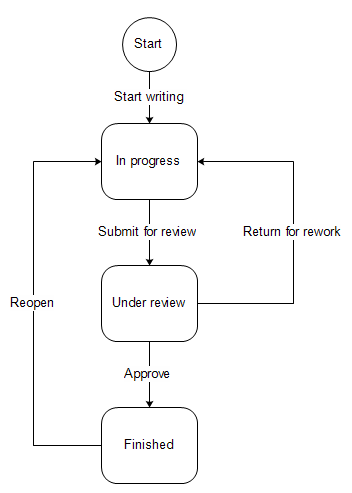

Managing Workflows
Warning
Reused from OroCRM. Rework.
A workflow in OroCommerce is a set of steps and possible transitions associated with the entity (e.g. Checkout) that defines the sequence of steps.
In OroCommerce you can define what processes can be performed and in what order, with regard to objects represented by records of an OroCommerce entity.
From this article you will learn to understand, create and manage workflows.
Each of the processes or actions applied to a record is a workflow transition and the state of this record before or after a transition is a workflow step.
Each transition connect to steps.
In the example below you can see a simple workflow of a document creation.
The workflow steps are “Start” and squares (In progress, Under review, Finished) and correspond to the state of the document.
Start step is used only to specify the first condition (basically the record is in the “Start” step before its processing has started.
The workflow transitions are the arrows that show what action can be applied to the document at a certain step.
Attributes, (also referred as “fields”) are characteristics of the record. For example, ZIP code and street name are attributes of an address.
In the course of each transition you can change some attributes of the record processed. For example, document attributes may be “Name” that must be defined after transition “Start Writing” and can be changed after transitions “Submit for review” and “Return for rework” and “Number of Pages” that must be defined after “Submit for review” and can be changed after “Approved”.
See more about Workflows.